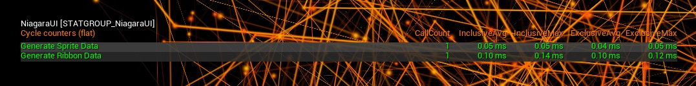
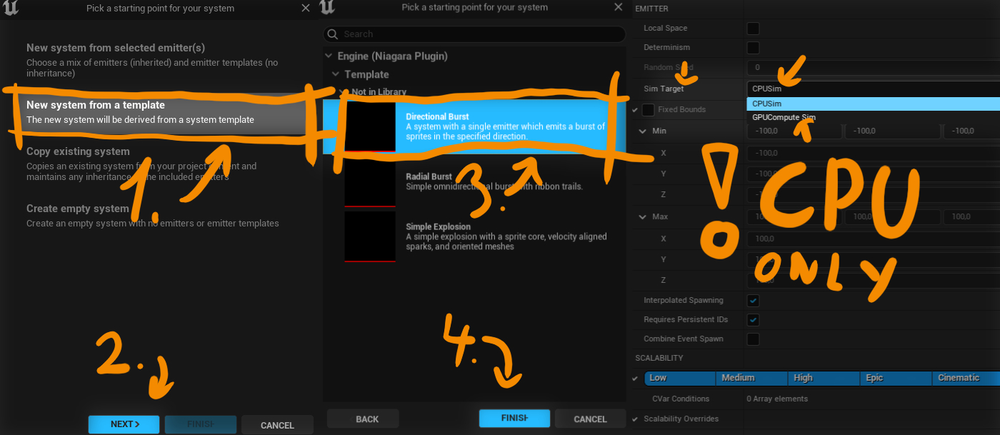
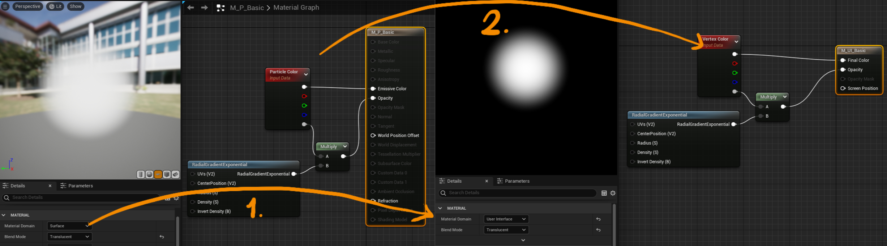
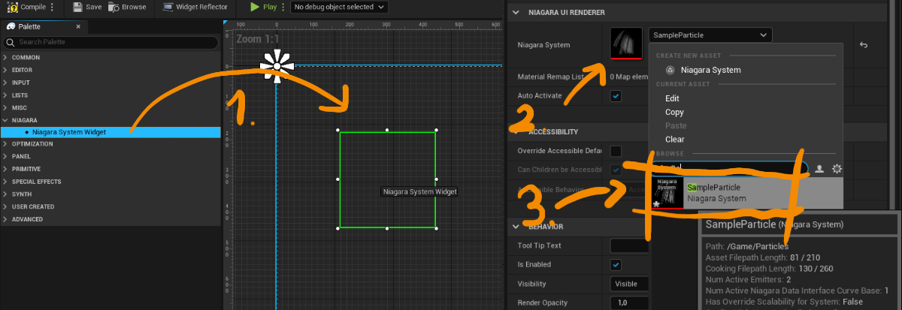
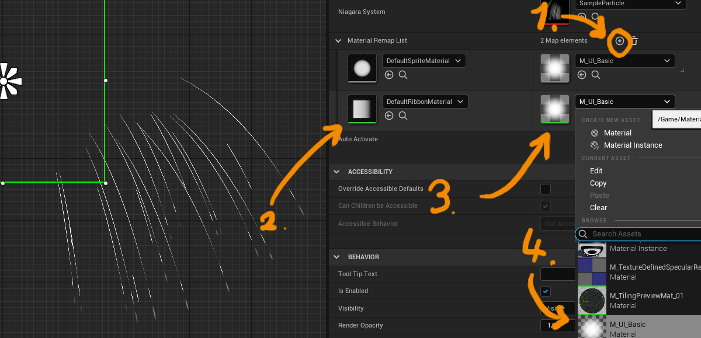
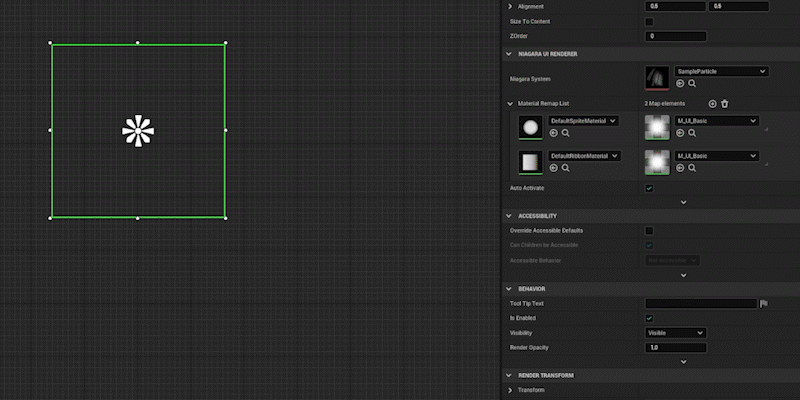

DOCUMENTATION
V
Overview
For a long time I have wanted to enhance my games with some UI particles, but I couldn’t find a good option. The only available options were render targets, a clunky and expensive choice, or some plugin from the Marketplace without Niagara support. While waiting for Epic to integrate UI particles to their engine, I thought that I could give it a shot myself. I ended up with something that works pretty well, so I want to share it with you guys. Feel free to use it however you want, and leave any comments or feedback.
Niagara UI Plugin adds Niagara Particle System Widget that allows you to render Niagara particle systems directly into the UI. The plugin supports sprite and ribbon CPU particles. Minimum version of Unreal Engine 4.26 is required! Everything higher, including UE5 should work just fine. This plugin was tested on Windows and Android, but it should work fine on other platforms too.
Demo video showing of features of the plugin
Performance
"stat NiagaraUI console command"
This screenshot shows performance metrics captured in a scene with 1,000 particles running on AMD Ryzen 9 5900X. It takes approximately 0.05ms to generate sprite data and 0.1ms to generate ribbon data. These numbers DO NOT include any actual Niagara simulation or rendering time. You can use “stat NiagaraUI” in console to check on the performance.
Installation Guide
You have 3 options how to install the plugin:
-
Install a precompiled plugin into Unreal Engine:
Recommended if you want to use plugin across multiple projects.
Installation Steps:
- Download the precompiled plugin for your version of Unreal Engine
- Extract the whole plugin folder into …\YourEngineInstallationPath\Engine\Plugins\
- Enable Niagara UI Renderer in your project’s Plugins settings
- Enjoy!
-
Install precompiled plugin into your project only
Recommended if you want to use the plugin in one project.
Installation Steps:
- Download the precompiled plugin for your version of Unreal Engine
- Extract the whole plugin folder into …\YourProjectPath\Plugins\
- Enable Niagara UI Renderer in your project’s Plugins settings
- Enjoy!
-
Compile your own version from GitHub:
Recommended if you’re an Unreal Engine God.
Installation Steps:
- Download the plugin source from the GitHub repository
- Copy the plugin into your plugins folder
- Regenerate Visual Studio project files
- Recompile
- Enable Niagara UI Renderer in your project’s Plugins settings
- Enjoy!
Setting up Simple UI Particle System
In this tutorial I'll use Unreal Engine 5 for all of the screenshots. Keep in mind that the setup is same in Unreal Engine 4, so you can still follow along.
- Create your Niagara particle system. In this case I will use Directional Burst template. You can create whatever Niagara System you like, or use already existing one, but keep in mind, that this plugin only supports CPU Sim Target. 
- Because Unreal cannot render “normal” particle materials as UI elements we’ll need to create a version of each particle material with “User Interface” (1) material domain. We’ll also need to swap out some nodes. Use Vertex Color (2) node instead of Particle Color node. Usual particle parameters such as Particle Radius, Particle Random, etc. won’t be available for UI particle materials. For sprites you can access Dynamic Parameter R and G data from Texture Coordinate with coordinate Index 1. This is how a transformation of a basic UI material looks like: 
- Add Niagara System Widget into your widget (you can find it in the widget palette under the “Niagara” category). With your widget selected you can pick your Niagara System in the details panel. 
- You still won’t be able to see your particles because we need to apply the newly created UI material. There are two ways we can to that: You can either set the material directly into your Particle System renderer. This will result in particle rendering correctly in the UI, but it will make it render incorrectly in the Niagara preview and in the world. Since I wouldn't recommend doing it this way, we'll take a look how to do it the second way: We can use Material Remap List on the widget itself. Just add a new element into it (1), select the original particle material on the left (2), and select the newly created UI material on the right (3, 4). You can repeat this for as many materials as you want. Each material on the left will get automatically remapped to the one on the right when rendering UI. This way you can still see the correct preview of the particle system, use the particle in the world and use it as a UI particle system! In this case I'll remap both DefaultSpriteMaterial and DefaultRibbonMaterial to my newly created material from step 2. 
- If you followed this tutorial you may not see any particles on your screen. It may be because We've used burst particles which spawn only once so they may be all dead. We can just recompile the widget, which will respawn the particle system. We should see our niagara particles now. You can play around with more settings in the detail panel, for example if the particle system should auto activate or not. At this point is your UI particle set up and ready to go! You can animate it, activate it on button press or do whatever else you want! This is the result: 
Niagara System Widget Variables
Niagara System Reference
Reference to the niagara system asset
Material Remap List
List of material references used to remap materials on the particle system, to materials with "User Interface" material domain.
Every Key (Material on the left) will be remapped to it's Value (Material on the right)
This is useful for keeping the particle system rendering correctly in the niagara editor and in the world, while it still can be used as UI particle system.
The alternative is to apply materials with "User Interface" material domain directly in niagara renderers, but this will result in particle system
not rendering correctly, if used outside UI renderer.
Auto Activate
Should be this particle system automatically activated?
Advanced:
Fake Depth Scale
Scale particles based on their position in Y-axis (towards the camera)
Fake Depth Scale Distance
Fake distance from camera if the particle is at 0 0 0 - Particles will be getting bigger quicker the lower this number is
Show Debug System in World
Show debug particle system we're rendering in the game world. It'll be near 0 0 0
Niagara System Widget Functions
void
ActivateSystem(bool Reset)
Activate Niagara System with option to reset the simulation
void
DeactivateSystem()
Deactivate Niagara System
UNiagaraUIComponent*
GetNiagaraComponent()
Return Niagara Component reference for the particle system.